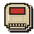
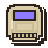
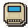

기종째 담기
롬 폴더를 고르면 기종 하나로 담아요. 폴더에 gamelist.xml · metadata.pegasus.txt 가 있으면 제목 · 설명 · 그림도 같이 가져와요. 팩 밖 폴더는 원본을 그대로 두고 복사해 와요.
RETROBAT / PEGASUS / ES-DE / WINDOWS
롬 폴더를 담으면 제목 · 설명 · 그림을 채워, 프론트엔드가 바로 읽는 모양으로 PC 폴더와 안드로이드 기기에 내보내요.
설치 없이 켜지는 exe 파일 하나(약 100MB)예요. 서명하지 않은 파일이라 Windows 가 「PC 보호」 창을 띄우면 「추가 정보 → 실행」 을 눌러요. 새 판이 나오면 켤 때 물어보고 스스로 갈아끼워요.


gamelist.xmlRetroBat · Batocera · ROCKNIX 가 읽는 목록

metadata.pegasus.txtPegasus 목록 — 안드로이드 실행 명령까지

ES-DEES-DE 가 읽는 폴더 이름과 자리로
팩은 library.json 이 든 폴더 하나예요. 롬은 roms/<기종>/, 그림은 media/ 에 모여요.
롬 폴더를 고르면 기종 하나로 담아요. 폴더에 gamelist.xml · metadata.pegasus.txt 가 있으면 제목 · 설명 · 그림도 같이 가져와요. 팩 밖 폴더는 원본을 그대로 두고 복사해 와요.

ScreenScraper · libretro 에서 찾은 후보를 골라 한 게임씩 고치거나, 「일괄 스크래핑」 으로 기종째 찾아 골라 넣어요. 빈 영어 제목 · 장르 같은 칸은 AI 에게 한꺼번에 물어요.

팩 제자리에 목록만 만들거나, 롬 · 그림까지 폴더 · SFTP · 안드로이드 USB 로 보내요. 체크한 게임만 보낼 수도 있어요.
팩을 오래 다듬을 때 쓰는 도구들이에요.

한글패치 목록을 보고 배포처에서 받은 패치를 정리해, 원본 롬에 걸어 (k) 판을 만들어요. 해시 확인 · 압축까지 해요.

기종째 빈 그림 · 글을 찾아요. 롬 해시나 파일 이름으로 확실히 맞춘 것만 미리 체크해 두고, 나머지는 보고 골라요.

구글 이미지에서 바로 가져와 자르고, 배경을 지우고, 비스듬한 박스 사진을 똑바로 펴요. AI 누끼 따기도 돼요.

빈 칸은 AI 에게 묻고, 표지 속 글자는 한글 제목으로 다시 그려요. 글은 Gemini · ChatGPT · Claude, 그림은 Gemini · OpenAI 의 본인 키로 써요.

안드로이드 기기의 Pegasus · 에뮬레이터 설정 폴더를 팩에 저장해 두고, 새 기기에 그대로 넣어요.
켤 때 새 판이 있는지 보고 물어요. 「확인」 한 번이면 받아서 exe 를 갈아끼우고 다시 켜요.
게임 파일 · BIOS · 열쇠는 들어 있지 않아요.
팩 만들기부터 기기로 보내기까지, 화면마다 번호 네모칸을 붙여 풀어 두었어요.